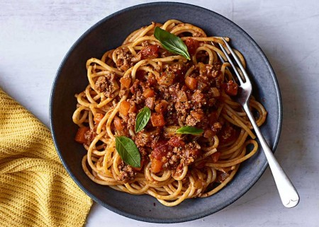

Pasta Bolognese

Description
This is a recipe for pasta bolognese. The recipes and portion sizes may vary. The ingredients are listed in the next paragraph and the steps for making the salad in the paragraph after.
Ingredients
To prepare the pasta bolognese you will need:
- 1 tablespoon of extra virgin olive oil
- 2 small onions
- 4 small celery sticks
- 2 large carrots
- 4 garlic cloves
- 1 teaspoon dried oregano
- 400g of minced beef
- 2 tablespoons of flour
- 2 tablespoons of tomatoe sauce
- 400g of chopped tomatoes
- half of stock cube
- 300g of dried spaghetti
- freshly ground black pepper
Steps
Steps to prepare the pasta bolognese:
- Heat the olive oil in a large pan over a medium heat and add the onions, celery, carrots, garlic and oregano. Cook for 10 minutes to soften.
- Add the mince and break up with a wooden spoon, then cook for about 5 minutes. Add the flour to soak up the juices, and stir really well to coat. Add the tomato purée and chopped tomatoes, then using the can, refill with water and add to the pan. Stir well.
- Add a little pepper and the stock cube, stir, bring the pan to the boil, then simmer for 15 minutes, or until the vegetables are cooked and the sauce thickened nicely.
- Meanwhile, cook the spaghetti according to the packet instructions. When everything is ready, add the cooked spaghetti to the sauce and mix well. Serve.